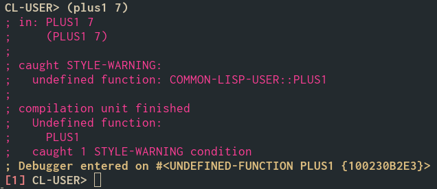
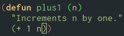
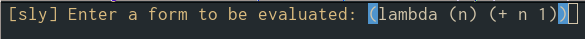
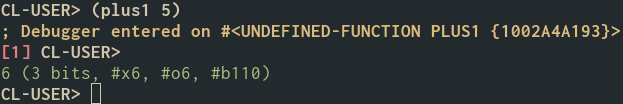
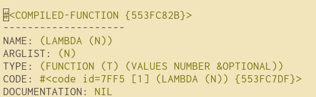
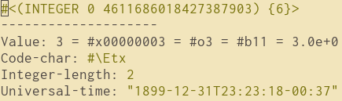
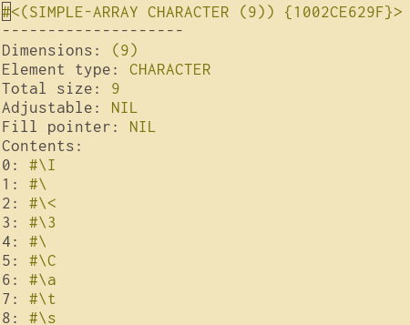

Porquê Common Lisp
1. Introdução

Lisp is the greatest single programming language ever designed
– Alan Kay
É praticamente inevitavel ouvir a palavra "Lisp" quando linguagens de programação são discutidas.
Usualmente a menção desta mística e misteriosa linguagem desperta a curiosidade de uns.
Enquanto que outras vezes a única coisa que este nome parece despertar é um trauma de parênteses reprimido por muitos anos.
Tanta conversa sobre esta linguagem antiga estranhou-me um pouco, especialmente porque até hoje nunca ouvi ninguém a dizer coisas boas sobre COBOL ou Fortran.
Após aprender a programar em Lisp, posso dizer que esta abriu-me os olhos para um novo paradigma de desenvolvimento, um paradigma mais flexível, mais rápido e mais interativo.
Neste artigo gostaria de partilhar o que torna esta linguagem especial para mim, e o que esta tem para oferecer a alguém que nunca a tenha usado.
2. Ao que me refiro com "Lisp"
Sendo Lisp uma família de linguagens, muitas vezes quando o seu nome é mencionado não é muito claro a qual linguagem em especifico este se refere.
Queria deixar claro que, quando me refiro a Lisp, refiro-me unicamente a Common Lisp, caso contrário serei mais explicito.
É importante referir que nem todas as linguagens desta família partilham das mesmas vantagens e desvantagens, outros membros populares desta família são:
- Scheme: Um dialeto minimalista focado no paradigma funcional, usado nas aulas introdutórias de programação do MIT até 2011.
- Clojure: Um dialeto focado em imutabilidade e no paradigma funcional, o facto de rodar na JVM dá-lhe acesso a uma enorme quantidade de bibliotecas de Java.
- Elisp (Emacs Lisp): Concebido para ser usado para configurar o
sistema operativoeditor de texto Emacs. - Racket: Descendente do Scheme e usado maioritariamente para implementação de linguagens, como também para fins educativos.
3. A história dos Lisps
Lisp foi originalmente criado por McCarthy, sendo a segunda linguagem mais antiga em uso, perdendo apenas para o Fortran que ainda vê uso extensivo nas áreas de HPC .
Quase 7 décadas após a sua criação, Lisp ainda é visto favoravelmente, sendo frequentemente recomendado a outros, e descrito como algo "iluminador".
O primeiro Lisp foi inicialmente concebido como uma notação para processamento de listas (LISt Processing), e ao longo da sua evolução foi pioneiro de vários conceitos como:
- A REPL
- Garbage Collection
- Recursão
- Funções de ordem superior
- Dynamic Typing
- Entre outras…
Atualmente a linguagem já não tem a mesma presença na industria e academia de outrora, mas nem sempre foi assim, houve um altura em que Lisp era muito usado na comunidade académica, especialmente na área de inteligência artificial.
Mas com o AI Winter dos anos 80 e 90, as verbas e o interesse na área foram gradualmente desaparecendo.
Não ajuda que houve muitos anos em que Lisp só podia ser rodado em máquinas pessoais especialmente desenhadas para o rodar, máquinas essas extremamente caras, cujas companhias não conseguiram acompanhar a velocidade de desenvolvimento do hardware nem resistir ao AI Winter.
4. Flexibilidade
As linguagens mais usadas hoje em dia auto entitulam-se "multi-paradigma", apesar disso, muitas destas parecem não ser muito pragmáticas no que toca a coisas como:
- Evitar/indicar operações destrutivas. Será que aquele método split() vai modificar a string in-place ou retornar uma nova?
- Ter (boas) funções anónimas (lambdas).
- Otimização (ou a sua inexistência) de chamadas recursivas.
Lisp, apesar de ser imperativo, funcional e orientado a objetos, nunca força quaisquer um destes paradigmas no programador. Existem sempre várias formas de alcançar um dado objetivo.
Quer seja programação imperativa, funcional, evitando estado e métodos destrutivos, ou até orientada a objetos, a linguagem nunca me fez sentir limitado por escolher um destes paradigmas em vez de outro. 1
5. Interatividade
Lisp é das linguagens mais interativas que existem, coisas como:
- Redefinir uma função enquanto o programa corre.
- Redefinir uma função enquanto esta mesma está a ser executada.
- Chamar propositadamente uma função ainda não definida para depois a definir.
- Abrir o debugger quando um erro é encontrado, ao invez de parar a execução do processo e crashar.
- Fazer tudo isto remotamente, numa binária a ser executada.
São todas possíveis e naturais em Lisp, tendo este sido desenhado com esta maleabilidade em mente.
Este set de vantagens, especialmente a possibilidade de compilar funções individuais, torna o processo de desenvolvimento altamente interativo, mudando completamente a forma como um programa é construido.
Numa quaisquer outra linguagem, teríamos de escrever o código, compilar, rodar e testar o programa e, na eventualidade de um bug ou problema que causa-se um crash ser encontrado, teríamos de voltar ao editor, tentar descobrir o bug e corrigi-lo, depois seria necessário voltar compilar novamente o programa todo…

… Para depois tentar alcançar o estado onde o bug se manifestava.
Vamos pegar noutro exemplo mais concreto:
Supondo que eu quero criar uma função chamada plus1, que recebe um numérico como argumento e o incrementa por 1.
Se eu chamar essa mesma função sem primeiro a definir, isto é o que acontecerá:

No debugger aberto, são me apresentadas diversas opções: 2
CONTINUE: Tentar chamar a função novamente.USE-VALUE: Chamar uma outra função, passando-lhe o argumento deplus1.RETRY: Tentar novamente.*ABORT: Descartar todos estes stack traces chatos e voltar para a REPL, como se nada de mal se tivesse passado.ABORT: Terminar a atual instância de Lisp e ir dormir.
Se clicar-mos em CONTINUE sem primeiro definir-mos a função, obteremos exatamente o mesmo erro, mas se já a definir-mos:

Ou se decidir-mos usar a opção USE-VALUE:

O valor correto será retornado: 2

6. Extensibilidade
Devido à sua sintaxe uniforme baseada à volta de listas 3 e notação Polaca, e considerando que a linguagem foi feita com o intuito de processar listas, isto confére-lhe o poder de manipular o seu próprio código como se este fossem dados, dando origem a um poderosíssimo sistema de macros.
Macros esses que permitem coisas que geralmente teriam de ser implementadas pela implementação/compilador em si, possam ser implementadas usando macros.
Coisas como o sistema de objetos do Common Lisp (CLOS) foram inicialmente implementados usando macros!
Isto torna a linguagem infinitamente incrivelmente extensível:
- Queres usar pattern matching como em Haskell? Sem problema!
- Já trabalhastes na Volvo e tens saudades de quando usavas APL? Aqui tens!
- Pattern matching não é suficiente para ti, também desejavas ter um sistema de tipos Hindley-Milner? Okay!
7. Trepando a árvore
Sendo uma expressão nada mais que uma lista, consequentemente, um set de expressões umas dentro de outras nada mais é que uma árvore, mais precisamente, a Árvore Sintática Abstrata.
(+ (* 8 8) (* 4 4))
Isto, para além ser inegavelmente elegante, faz com que seja possível manipular diretamente a árvore sintática do programa, usando ferramentas como o paredit. 4
8. As ferramentas
Todos as implementações de Lisp que conformem com o Standard devem incluir, entre outros:
- Um compilador ou interpretador
- Um debugger
- Um stepper
- Um inspector
O compilador, debugger e alguns dos seus modos de utilização já foram mencionados em cima.
Sendo o Lisp uma linguagem orientada a objetos, o inspector pode ser usado para inspecionar diferentes tipos de objetos/estruturas de dados:



O stepper é uma espécie de interpretador passo-a-passo, à la haskelite.
9. O menos bom
Apesar de todos os pontos mencionados em cima, nem tudo é um mar de rosas.
9.1. O pequeno ecossistema
Atualmente Lisp tem uma pequena (mas dedicada) comunidade.
Consequentemente, apesar de existirem imensas bibliotecas para esta 5, o número destas fica muito aquém de linguagens mais mainstream como:
- Python (~500K)
- Java (~600K)
- C# (~400K)
- Javascript (~2100K!) 6
Felizmente, a sua stdlib é bastante abrangente, o que reduz um pouco a necessidade de recorrer a livrarias externas.
9.2. A poeira no sótão
Antes de Common Lisp existir, existiam vários dialetos de Lisp incompatíveis uns com os outros (Zetalisp, Lisp Machine Lisp, Interlisp, Maclisp, …).
Common Lisp foi criado com o intuito de ser o sucessor de Maclisp, e rapidamente se tornou o dialeto mais popular, conseguindo unificar a muito fragmentada (na altura) família dos Lisps.
Common Lisp foi feito com compatibilidade com o Maclisp em mente, o que infelizmente deixou-o com alguma nomenclatura menos clara e funções estranhas, como por exemplo:
car,cadr,caddr,cdr(para aceder ao primeiro, segundo, terceiro e ao resto da lista respetivamente)- 3 tipos distintos de tabelas:
alist,pliste hash-table
10. De onde ir daqui
Para quem estiver interessado em Lisp, mas preferir o paradigma funcional e uma linguagem mais "limpa", minimalista e com material de ensino abundante, recomendo fortemente o Scheme, cujo Spec tem apenas 1/10 do tamanho do de C.
Não só é o Scheme uma boa introdução ao mundo dos Lisps, como também é uma excelente introdução ao mundo da programação em geral, devido à sua simplicidade e a ter dos melhores materiais de ensino. 7
11. Ler também

Footnotes:
Um dos (muitos) mitos de Lisp é que esta é uma linguagem unicamente funcional, isto é obviamente falso. Até porque a grande maioria dos projetos que usam Lisp usam-no maioritariamente imperativamente.
Outro mito comum é que este apenas tem uma única estrutura de dados, a lista, isto não é verdade, apesar de todo o programa em si ser de facto constituido por listas, este programa pode usar diversas estruturas de dados como arrays, hash tables, etc…
Coisa que gradualmente se está a tornar mais popular com coisas como o MPS da JetBrains e o Treesitter da Microsoft. Apesar de Lisp já ter editores estruturais nos anos 80.
Provavelmente relacionado com o facto de esta ser uma linguagem antiga.